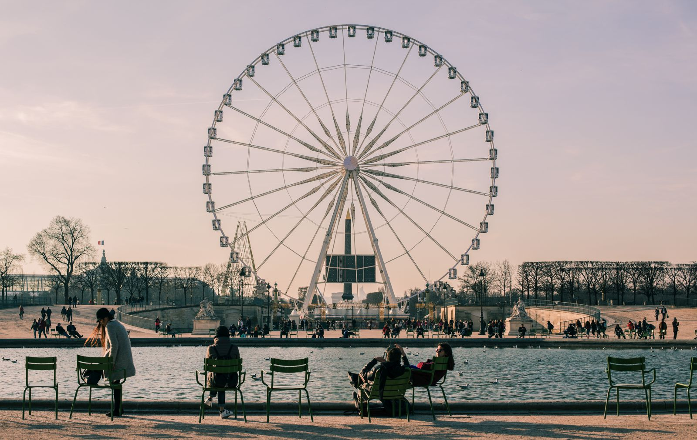

Dhanika
January 14, 2019
200 Commets
“I see nothing in space as promising as the view from a Ferris wheel.”
- E.B. White, The Points Of My Compass
- E.B. White, The Points Of My Compass
Let's be honest: Fairs are a perfect place for a photo shoot. You could pose with your cotton candy for a fun-loving and candid picture, or you could dance under the neon lights with your hands up in the air. You'll go for the piggyback with your pals, or blow a kiss to a super fluffy, stuffed animal unicorn that you won as a prize. Are you starting to get some good ideas?